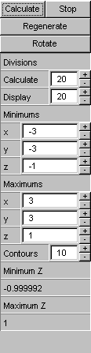

Surface Plotter - Parts
The Function Panel

This panel is placed at the top of Surface Plotter frame. You can define your functions here. (See Function Syntax Reference to learn on how to define a function) There are two text input fields with a checkbox at the left side. The checkboxes are used to mark the functions at the right "active". Surface Plotter evaluates only active functions when you depress calculate button to start calculations, and plots only active functions. You can have Surface Plotter evaluate two functions but plot only one of them by checking both checkboxes before starting the calculations and unchecking one of them after Surface Plotter finished all calculations. Then, by checking and unchecking the checkboxes, you can switch the function to plot. If you checks both of them, Surface Plotter plots both of the functions in the same object space, and you can see the intersection lines of the two surfaces. Note that it is impossible to plot a function without first evaluates it, so if you didn't activate a function before starting calculations, Surface Plotter has no way to plot it after calculations.
There are also one checkbox labeled "delay regeneration" and a status line. When the checkbox is checked, Surface Plotter will not regenerate image as you drag the image to rotate, scale, or move it. (see: mouse operations) Instead, Surface Plotter just display the position and direction of axes. This will dramatically reduce plotting time, especially when the surface to plot has huge number of sample points. The status line is straight-forward. It displays the current status of Surface Plotter.

The Setting Panel
This panel is placed below the function panel at the right side of Surface Plotter frame. It contains four command buttons and several input fields.The four buttons and their functionalities are:
- Calculate
Instructs Surface Plotter to clear current internal surface data dan start a new calculation session. Surface Plotter evaluates only active functions, but you will lose all surface data of the previous session. - Stop
Instructs Surface Plotter to stop all background activities in progress. This will interrupt the surface rendering process and the calculations. This is an interrupt/abort buttton, not a cancel button. Because Surface Plotter clears surface data before doing calculations, you will have no surface data to plot if you interrupt calculations. - Regenerate
Instructs Surface Plotter to regenerate image. You need this button when you changed the z range or the number contour lines, or when you need to refresh Surface Plotter - Rotate/Freeze
Automatically rotates the displayed surface. When you depress the "rotate" button, the label of the button will change to "freeze". Depressing the "freeze" button will stop automatic rotation. You can only rotates surface plots, not contour plots nor density plots. (see: menu|options)
- Divisions
The number of divisions to be calculated and to be displayed. In wireframe mode, Surface Plotter uses both "calculate" and "display" values to generate surface plot. - Minimums/Maximums
The minimum and maximum values of x, y, and z variables. Only x and y ranges update needs recalculation. Surface Plotter displays the minimum and maximum values of calculated z. Use these values to update the z variable range and depress the regenerate button to regenerate image. - Contours
The number of contour lines to display in contour plot. If you change this value, you need to depress the regenerate button to take the change into effect. This value also affect the z legend of density plot.
Send comments, suggestions, bug reports to Yanto Suryono